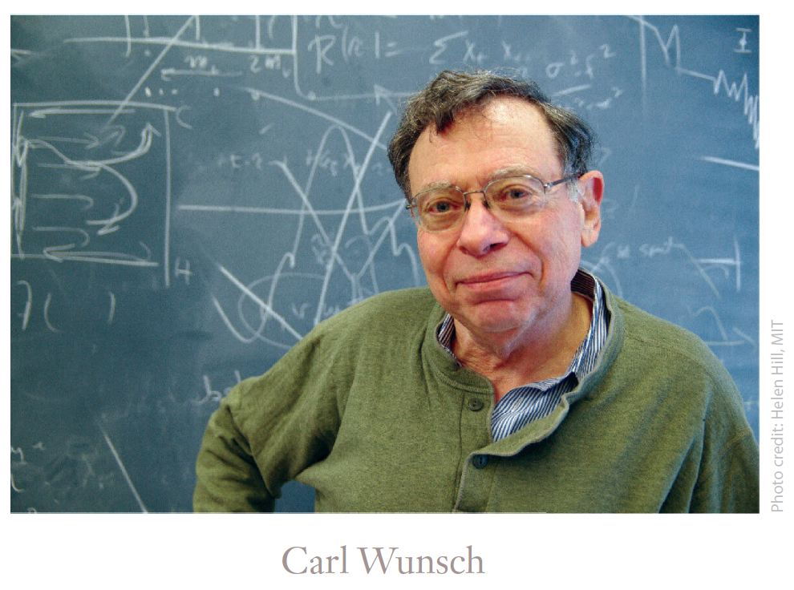
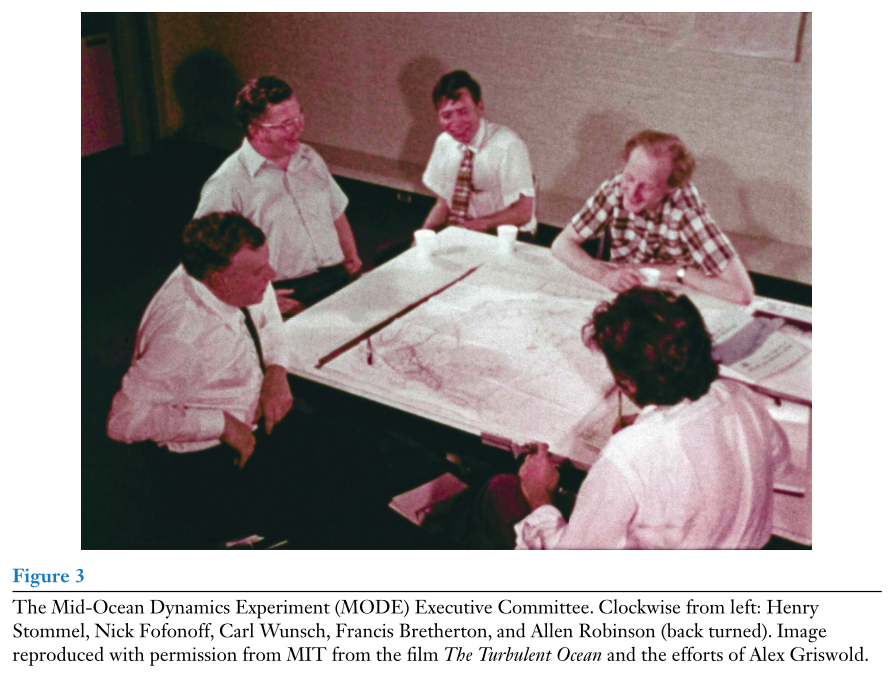
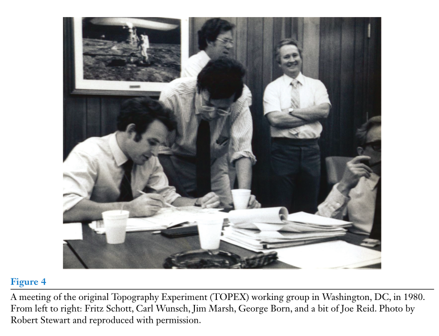
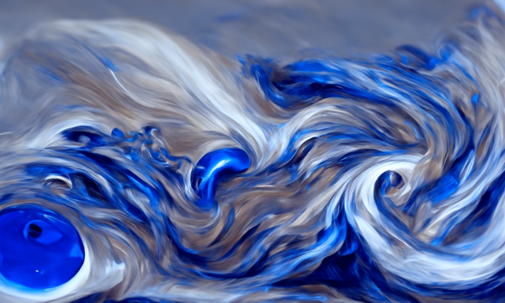

CARL WUNSCH

简介
Carl Wunsch（1941-）是MIT教授，1962年他在MIT获得数学学士学位，1966获得MIT地球物理博士学位（导师：斯托梅尔）。
Wunsch在物理海洋学及其气候变化领域开展研究，重点是利用卫星遥感、声层析及常规方法进行全球规模的海洋观测。他主持了早期的卫星测高科学委员会，深入研究大洋环流及其气候影响分析，并对古海洋学进行解释。他的工作涡流、潮汐和混合过程等各种海洋过程提供了深刻的见解。
他将逆向反演应用于北大西洋环流问题，揭示了与有限观测数据相一致的理论框架。Wunsch也是世界海洋环流实验（World Ocean Circulation Experiment，WOCE）的发起人，该计划研究了大洋环流在地球系统中的作用。
他是美国国家科学院院士、敦皇家学会外籍会员，美国艺术与科学院、美国哲学学会、美国地球物理学会和美国气象学会会员，获得了2006年美国地球物理学会鲍伊奖和2015年沃尔特-蒙克奖。
成就
2006年，Carl的门生（Jochem Marotzke，Lee-Lueng Fu，Eli Tziperman）在JPO杂志策划特刊，庆祝Carl Wunsch 65岁生日，总结了他的4次物理海洋学革命性成就：
- 1）Carl Wunsch和Walter Munk发明了声学层析成像技术；
- 2）Carl说服NASA支持TOPEX/Posiedon测高卫星；
- 3）Carl是有史以来规模最大的海洋学实验WOCE的创造者和驱动者；
- 4）Carl将逆向建模的机制引入了物理海洋学，并将其从地球物理学中转移出来。
自传
Carl曾今为蒙克（1917-2019）和斯托梅尔（1920-1992）撰写了讣告，可见其在物理海洋学江湖地位之高。Carl目前仍旧活跃在一线，偶尔发表一些回忆录和科学史方面的文章。下面我们通过他2021年发表的一篇自传文章（80岁纪念）来了解这位科学家的故事。
WUNSCH C. Right Place, Right Time: An Informal Memoir[J/OL]. Annual Review of Marine Science, 2021, 13(1): 1-21. DOI:10.1146/annurev-marine-021320-125821.
简介
从和100年以前一样的纯机械仪器观测开始，到现代电子技术产生的巨大新能力，我的职业生涯可以说是涵盖了海洋研究的革命。在假设的稳态海洋中存在着优雅的理论。今天我们了解到海洋是一种高度湍流的流体，并在全球范围内相互作用，现在世界各地的研究团队正在利用航天器和各种独立的原位仪器对其进行研究。我的职业是偶然的：我很幸运能在正确的时间出现在正确的地方。
我职业生涯的大部分时间都在MIT（MIT）和伍兹霍尔海洋研究所（WHOI）担任物理海洋学家，同时涉足固体地球物理和古气候等领域。六十年对于任何一门活跃的学科来说都是一段很长的时间，这个领域无论是在其文化上还是在我们所理解的各方面都发生了翻天覆地的变化。当我在20世纪60年代初进入物理海洋学的时候，它是一个小型的、几乎像俱乐部一样的团体，其中主要从业者是WHOI和SIO的出海调查人员，以及纽约克、西雅图、夏威夷、英国、法国、斯堪的纳维亚和德国的少量参与者。人们大多遵循自然主义传统，很少使用数学来解释他们在海上看到的东西，少数是学术人士（如雷·蒙哥马利和亨利·斯托梅尔）。
人们几乎可以了解世界各地该领域的所有人（苏联除外）。大部分工作都是在非大学环境下完成的，比如WHOI和SIO，这是好像是人们眼中的一种宁静的追求。开始，这项技术几乎是完全机械化的，主要是使用原始的深海温度仪和南森瓶的反向温度计。人们曾多次尝试开发电子仪器，但有时剧烈移动的船舶物理环境、高压和腐蚀，意味着很少有此类设备可以使用。那时，导航依靠星星、太阳和月亮、六分仪，非常考验船员的真正技能。可用的英语教科书是Sverdrup等人（1942），以及Defant（1961），但是内容并不深刻。这一领域对我的吸引力是，一个人可以成为一名多面手，研究各种各样的物理问题，并产生影响。今天，知识大爆炸，要成为一名多面手几乎是不可能的。
在接下来的内容中，我主要说说过去的日子，因为年轻科学家对这段时间不太熟悉，它代表了我们向当代科学方式的转变，开始有大型的、国际性的调查项目、卫星观测、以及超级计算机，这些东西结合在一起，具有越来越复杂的结构。我简化了对我个人生活的描述。在 《Annual Review of Marine Science》 中描述80大寿和近60年的职业生涯是一个相当大的挑战。
父母
这是一个关于1900年左右来到美国的犹太移民的老生常谈的故事，他们为子女和孙子孙女在职业、学术和其他方面而奋斗。我的父母都是移民的孩子，我的母亲海伦（Helen Wunsch）出生于新泽西州，是莫里斯·盖利斯和米妮·伯恩斯坦·盖利斯的女儿，他们分别于1908年左右从立陶宛的维尔纳（Vilna）和白俄罗斯的明斯克（Minsk） 附近移民过来。我的母亲在新罕布什尔州的克莱蒙特长大，我的祖父在那里成为了一名成功的商人（经营萨尔茨公司，并建造了一些最早的加油站）。
我的祖父母于1905年从现在的乌克兰来到美国，但当时属于奥匈帝国（加利西亚）。父亲的哥哥姐姐出生在欧洲，但我父亲和一个弟弟都出生在曼哈顿下东区。
我的外祖母在我父亲11岁时去世，我的祖父是一位失败的裁缝，后来当糖果店老板也失败了。我父亲的长兄约瑟夫·沃尔夫·文施把这家人从贫困中解救出来，他进入布鲁克林理工学院并获得了工程学学位。他在布鲁克林办了一家起重机公司。公司非常成功，他将全家从布朗斯维尔搬到了布鲁克林，并支付了兄弟姐妹上大学的费用。我父亲在康奈尔大学学习，在那里他遇到了我母亲。
童年
1941年5月5日，我出生在纽约布鲁克林。直到12岁，一直住在弗拉特布什的中西部地区。这个家庭是舒适的中产阶级和世俗化的犹太人。 我父亲是一名机械工程师，起初在起重机公司工作，然后在我十几岁的时候，在康涅狄格州丹伯里的一家制造厂工作；后来，他在康涅狄格州斯坦福德经营自己的制造公司。在第二次世界大战期间，他在起重机公司负责为美国海军建造重型起重设备、起重机、绞盘等。我父母有五个孩子，其中我是第二个。 我的哥哥成了马萨诸塞州洛厄尔大学的电气工程教授，我的弟弟詹姆斯是纽约州立大学帝国州立学院的教授，我的兄弟耶利米是一名退休的养老金律师，现居住在芝加哥，最小的是我的妹妹萨拉，她是一位著名的民权律师，现已从马萨诸塞州美国公民自由联盟退休。（在最近的一次感恩节晚宴上，我数了一下两代直系亲属中的七位“Wunsch教授”。）
搬到郊区
20世纪50年代初，我的父母加入了中产阶级搬到郊区的行列，特别是搬到康涅狄格州的韦斯特波特。这座城镇因小说《穿灰色法兰绒西装的人》以及其对郊区环境的描述而臭名昭著。我不喜欢它，迫不及待地想离开。西港的斯台普斯高中专注于人文学科、英语、外语等，在我来到MIT之前，高中的科学和数学似乎已经足够了，但我意识到许多公立高中学生比我准备得好得多。1957年夏天，多尔·奥利弗基金会在哈特福德附近的卢米斯学校举办了一个项目，我从中受益匪浅。就是在那里，我第一次遇到了电脑，整个夏天我都在学习如何在为数不多的穿孔卡输入IBM 704s编程。 罗伊·纳特（RoyNutt）和其他人是我学习FORTRAN语言的领路者。一路上，在初中和高中，我幸运地遇到了一些令人兴奋的老师。其中一位是威廉·谢尔德，他对科学的热情在西港是罕见的，是他鼓励我申请多尔·奥利弗项目。
大学
我想去哈佛学习历史，但被拒绝了。
我选择MIT有各种原因，这也是一个幸运的选择，然后我想成为一名纯粹的数学家。1958年的MIT似乎势不可挡。但到了第一年年底，我已经相当满意了，我交了许多朋友。到了第二年，我意识到我缺乏成为一名纯粹数学家的天赋——拥有这种天赋的学生似乎在一个不同的精神世界中工作，我的方向也不清楚。 我获得了历史写作奖，成为《科技周报》的编辑，并结识了MIT管理层的各种各样的人，包括MIT公司的董事长、总裁和许多其他人。我渐渐地进入了应用数学领域，并逐渐意识到地球物理学有许多引人入胜的数学方面。 这些现象包括自由振荡、地球物理热通量和地磁，我的大部分理解来自哈罗德·杰弗里斯的书。MIT的一位朋友菲利普·纳尔逊主修地质学和地球物理学，他鼓励我走这条路。
毕业后
毕业后，我在《普罗维登斯公报》担任总记者。当时，该报在罗德岛州各地设立了办事处。这段经历非常迷人，因为我能够处理镇上分配给我的所有事情，从讣告到镇议会会议，再到正在进行的州长竞选的候选人。坐着听他们讲话本身就是一种教育。作为新人，我通常在工作日的晚上4点到午夜换班，周末我常常独自一人在办公室。我们被要求制作周末专题文章，这些文章不是硬新闻，有一些兴趣成分。在这里，我学会了讲故事。 街对面的酒吧是记者们常去的地方，我喝着酒与当地的政客们交谈，这也是一种非常不同的教育。
当报纸要求我留下来时，我说想先去读研究生。
幸运
回顾我的科学生涯，我惊讶地发现我是多么幸运，在正确的时间，在正确的地点，遇到了正确的人。
就在20世纪70年代电子革命之前，我成为了一名物理海洋学家。当时的观测方法为前几代海洋学家所熟悉，甚至可以追溯到帆船探险。我发现使用南森瓶、深海温度计、航位推算导航、冯·阿克斯海流计等老式航海方法极具吸引力。我遇到过包括雷蒙德·海德、亨利·斯托梅尔、弗兰克·普莱斯和沃尔特·芒克在内的长期合作者。他们和其他重要的名字将出现在下面。
研究生和物理海洋
随着我对地球物理越来越感兴趣，我申请了研究生院。
与我考虑过的其他大学相比，MIT地质与地球物理系似乎更加任性、友好和无组织，这又是一点运气。我被指派为助理教授史蒂夫·辛普森的第一年研究助理。他管理着一个MIT小组，旨在解决区分地下核试验和地震的问题。我学习了许多地震学和时间序列分析，并选修了经典力学、地磁、应用数学等课程。因此，我获得了当时大多数物理海洋学学生都不熟悉的背景。出于某种原因，MIT杰出的实验室流体动力学家Raymond Hide对我很感兴趣。正是他为我获得了NASA的实习机会。1963年春天的一天，他建议我在秋季（我的第二年）去见一位即将从哈佛来的新老师亨利·斯托梅尔，我从未听说过他。我与他的相遇让我兴奋不已，并奠定了我科学兴趣的基石。我第一次遇到了一位真正有魅力的科学家。 他迷人、平易近人，且鼓舞人心，充满有趣的想法和故事。我决定我不在乎他做什么，我想和他一起工作。 我告诉他我对海洋一无所知，他的评论是：“那样更好。”
Stommel建议我研究的第一个问题是旋转流体中稳定粘性运动的侧壁边界层。当时，奇异摄动理论已成为理论海洋学的流行数学。我没有解决这个问题的数学技能，汉克也没有。 经过几个月的斗争，他建议 我咨询了哈佛大学老师艾伦·罗宾逊。我与罗宾逊的第一次会面令人难忘，因为他向我保证，他们已经解决了问题，即将公布结果。回到MIT，我看起来一定有点沮丧，当我告诉他时，他只是笑着说：“罗宾逊总是这么说。”事实证明，英国数学家基思·斯图尔特森和后来的作者最终解决了这一重要问题，产生了现在被称为斯图尔特森层的东西。
我已经做了足够多的工作，通过了博士预科普通考试。然后，汉克建议将长期潮汐作为博士论文的主题。这个主题很不流行，但有一个很大的优势，那就是对海洋的无知通常不会成为一个严重的障碍。 该领域的重要人物都在很久以前：拉普拉斯、开尔文、瑞利、霍夫、G.达尔文等。我在时间序列和固体潮汐方面的经验使这个方向成为了一个实际的方向。我需要长时间的验潮数据，汉克知道SIO的沃尔特·芒克对潮汐有着浓厚的兴趣，并一直在编辑和数字化纸质记录仪数据。1964年秋天，沃尔特参加了MIT的一次研讨会。晚上，汉克在一个聚会上介绍了我们。然后他走开了，留下我向沃尔特解释我想要这些资料的原因。令我惊讶的是，沃尔特断然地说：“没有。”但他邀请我到SIO去处理资料。在汉克的同意和资助下，我于第二年秋天驱车前往拉霍拉，在那里停留了几个月。沃尔特在考验我，看我是否有能力。这是沃尔特·芒克和我之间终身密切合作和友谊的开始。
出海
斯托梅尔和我都认为，如果我真的想在海上工作，我应该首先应该学习在海上工作中的经验。他让我与Art Voorhis取得联系，他是一位理智、随和的物理学家，当时他对海洋表面锋特别感兴趣。
1964年2月，我们乘坐研究船从伍兹霍尔驶入北大西洋，那里的近海正下着暴风雪。我很晕船，但两三天后我感觉好多了，这是一次奇妙的经历，与我以前遇到的任何事情都不一样。我们的仪器是旧的深海测温仪、带有反转温度计的南森水文模型和一条拖曳式热敏电阻链。几乎所有的东西都是机械的，我能理解所有东西是如何工作的。人们可以将普通的陆地科学与如此有趣的观测形式相结合，这使得物理海洋学似乎是一个更具吸引力的领域。出海有力地强化了我的推论，即无论理论多么复杂，观测数据都是了解海洋的关键。
家庭
1970年，我和同样来自布鲁克林的马乔里·马克尔结婚，多年前我们在康涅狄格州的韦斯特波特见过，我就认识她了。我们有两个孩子：贾里德，1971年出生，汉娜，1975年出生。在撰写本文（2020年）时，贾里德是西北大学的数学教授，汉娜是托伦托大学医学院的危重病护理教授。马乔里和我对我们的子孙感到非常幸运，非常感谢他们。50多年来，我幸运地拥有了一位忠诚、乐于助人的妻子。
马乔里是几本儿童读物的作者和插画家，还做过杂志和其他插图。 她拥有康奈尔大学英语学士学位和哈佛大学建筑与教育硕士学位。近年来，她一直专注于油画。
早期职业生涯
我的博士学位于1966年秋季完成，在海军研究办公室（ONR） 的支持下，我成为了亨利·斯托梅尔的博士后。在后人造卫星时代，ONR积极寻求人员支持。几个月后，我被任命为MIT地质与地球物理系的讲师，新到的弗兰克 ·普莱斯主任正着手在该系建立海洋学科，该系当时与气象系不同，但共用一栋大楼。第二年，我被任命为助理教授，开始在MIT教职中走上正轨。沃尔特·芒克成为了我的亲密朋友和同事 。和沃尔特一样，我从固体地球物理学开始，对时间序列分析感兴趣。那时，我对沃尔特非常了解，认识到他是物理海洋学和地球物理学的木星：任何有着类似兴趣（和我一样）的人，如果进入他的轨道，都可能再也逃不掉了。
这些年来，我收到了各种各样的邀请，他们希望我能搬到一些更加优秀而有吸引力的地方，但我最终得出结论，我在MIT和WHOI的同事让这成为我最理想的地方。普莱斯通过说服该系的长期赞助者，授予我塞西尔和艾达物理海洋学的绿色教授职位，让我很容易留下来。我在1975年至2012年担任该职位。1977年初，新当选的吉米·卡特总统选择弗兰克·普莱斯作为他的科学顾问。到那时，弗兰克已经担任部门主任12年了，正在寻找新的接班人。令我完全惊讶的是，他坚持认为我是他唯一可能的继任者。那时，我35岁，正在建立自己的科学事业，家里有两个年幼的孩子。 我本不想这么做，但弗兰克是一个很有说服力的人，最后我同意成为代理部门主任，直到找到其他人来接手。从我与弗兰克的长时间交谈中，我真正记得的是，他坚持认为我对科学问题有“品味” ，这是工作中非常重要的因素。在MIT，与主席轮换的地方相比，系主任的职位相当强大。
我们对局外人进行了走访。大约两年后，结果空空如也，我不得不同意担任总共五年的负责人。事后看来，这是一次有趣且非常有用的与人合作和组织事情的经验，但在当时我并不喜欢。五年过去了，我就逃到英国剑桥去休假。 我感谢我有两位非常有帮助的部门行政官员：首先是林恩·霍奇斯·迪基，然后是道格拉斯·菲弗。他们都非常有组织性，在非常多样化的部门中善于倾听实际情况，并提供了良好的建议。
MIT和WHOI
从20世纪60年代开始，MIT与WHOI就联合培养博士的可能性进行了持续的讨论。1965年，弗兰克·普莱斯出任MIT地质学和地球物理学系的新任系主任后，双方的讨论开始僵化。1968年签署了一项正式协议，导致该项目于明年开始。在这段时间里，我要么是研究生，要么是初级教师，因此对这一过程几乎没有了解。后来听说，WHOI方面的一个强烈动机是需要筹款，并认为教育计划将是一个很好的工具。在MIT方面，弗兰克·普莱斯决心加强该系的出海观测能力。
在我看来，这个项目是必不可少的，几乎我所有的博士生和硕士生都是来自这个联合项目。普莱斯请我担任第一个联合监督委员会主席，在那些年里，海洋学（物理海洋学、化学海洋学、生物海洋学、工程学、地质学和地球物理学）中非常不同的元素都是由这一委员会管理的。我们试图在所有这些领域制定一套连贯的课程，对教师进行质量控制，管理住房和机构间交通，等等。这些年来，我教授了各种关于海洋环流、时间序列分析、海浪、反演方法和其他学科的课程，部分是因为需要，部分是因为反映了我自己的兴趣。我自己的团队对职业和教学生活至关重要：我有29名成功的博士生、22名硕士生、43名博士后和各种本科生论文生。讲述他们的故事远远超出了我的篇幅限制！多年来，我与汉克·斯托梅尔的合作经历让我建议那些想攻读博士学位的学生首先决定他们想与谁合作。 一个人可以在以后改变领域和重点，但一个好的导师是最重要的因素。
这一联合机制已经在世界各地的海洋学界得到了广泛的复制，并被认为是一个巨大的成功。然而，在不断变化的海洋学文化中，人们担心它的未来。
科学
内波
读完博士学位后，我和当时的任何海洋学学生一样，对时间序列分析有着丰富的经验。Stommel建议，鉴于我所在的新浮标小组正努力从系泊系统获取时间序列数据，我不妨尝试以百慕大岛为平台进行温度测量。这一建议由来已久。首先，在20世纪50年代初，斯托梅尔有了在百慕大群岛上建造一座天文台的想法，该岛距离波士顿和科德角很近，而且有当地船只可供使用。除了一些全球分散的验潮仪的测量之外，几乎不存在海洋时间序列数据。建造天文台后，他在维护几个不同的仪器操作和解释复杂数据方面都遇到了很大困难，于是他放弃了它。其次，斯托梅尔写了几篇劝诫性的论文，敦促“一些优秀的工程师”参与海洋学。他曾与MIT仪器实验室的一群前阿波罗计划工程师联系，他们很高兴摆脱了与NASA合作的严格规则，获得了海军ONR的宽松氛围。斯托梅尔把我介绍给这个小组，并帮助我获得ONR支持，我们开始了合作。
当时，WHOI海流计既没有测量温度也没有测量压力。Draper–MIT 温度/压力记录仪曾一度被广泛使用，但随着电流表开发人员增加该功能，该记录仪逐渐过时。德雷珀工程师喜欢称之为“海洋望远镜”的电缆处理技术被有效地应用于WHOI内波实验。
我开始担心巨大的百慕大地形对我们正在研究的现象的影响。在我第一次尝试理解地形影响时，我假设波浪在到达顶点之前会从斜坡反射。当我们在WHOI实验室技术人员的帮助下，试图在水槽中再现这些波时，很明显，它们并没有在我们使用的频率下反射，而是传播到角落里，在那里它们发生了故障。这促使我写了第二篇论文，强调了临界坡度的作用。
对百慕大群岛的海洋混合和搅动效应存在一些生物学推测。作为一名最近的博士后，我在新的亚特兰蒂斯II上获得了两周的出海时间。一个博士后，在获得博士学位一两个月后，可能会成为一艘拥有大约30名船员的大型海洋学船上的首席科学家，以及一支规模类似的科学团队，这在今天可能是一种幻想。事后看来，这可能是我所有工作中最可怕的一项，包括召集一个科学研讨会（没有船上的技术人员）；借用STD（盐度-温度-深度）系统、实验室表格等；邀请足够多的人上船，这样我们就可以24小时不间断地使用这艘船。当我们准备离开伍兹霍尔前往百慕大群岛时，汉克·斯托梅尔上船对我说，“记住你不能早回来”。这提醒我们，船上的时间不能浪费。
Inverse Methods
20世纪70年代，瓦尔（Val Worthington）多年来一直试图从水文数据中拼凑出北大西洋环流，并最终下结论：该海流必须打破地转平衡。当时的假设是，基于船测的长距离剖面数据代表了时间平均环流。他将向任何能找到平衡质量、温度、溶解氧等的地转流解决方案的人提供一箱威士忌。当时，我从未从事过海洋环流研究，但这事听起来很有趣，我也参加了。
我听了沃辛顿的话，认为存在大规模海流破坏地转平衡的想法不太可能。我认为解决这个问题会很有趣，但我并不清楚该如何着手。我问瓦尔，他是否可以给我一个数据集，我可以用它来理解这个问题，他立即给了我一组水文剖面数据，从哈特拉斯角附近的美国海岸到百慕大，然后再回到佛罗里达州的美国海岸。他说，如果我能平衡地转三角，他会相信的。
我所做的就是写下不同层的质量和温度守恒要求，让参考能级速度未知。这在我逐渐淡忘的地球物理问题记忆中敲响了一个警钟，我知道由乔治·巴克斯和弗里曼·吉尔伯特在SIO提出的地球物理逆理论声称能够在存在噪音的情况下处理这种情况。然后我读了巴克斯和吉尔伯特的各种文章。巴科斯是一位应用数学家，他开始在函数空间中证明定理，而我却在苦苦挣扎。所以有一天，我打电话给我的地球物理学同事西奥多·麦登，简要地解释了我想做的事情，他很快说，“哦，不要读那些，得读拉尔夫·威金斯的论文”。拉尔夫在离散空间中让数学变得更加简单（线性代数）。沃辛顿的结论被推翻了：存在一个无穷多的数字，用方程的零空间表示。
我写了一文章给出解决方案，它似乎很受欢迎。最后，瓦尔站了起来，说他不懂我说的话，但给了我一箱威士忌微缩模型！事后看来，日本著名海洋学家Hidaka Koji（1940）也曾尝试过类似的方法。但德凡已经证明，Hidaka的方程是病态的，实际上扼杀了这个方向。无论如何，都需要一台电脑！
巧合的是，当时正在德国休假的汉克·斯托梅尔与弗里茨·肖特一起工作，他提出了贝塔螺旋法来寻找参考层速度。我们用两种看起来截然不同的方法来解决经典问题，Russ Davis（1978）很快证明了它们在形式上是相同的，尽管在实践中有所不同。
The Mid-Ocean Dynamics Experiment and Eddies
汉克·斯托梅尔在担任MIT教授的15年里，一直对利用周围数百名工程师的创造力有兴趣。他建议，应共同努力开发新装备并观测更佳的时间序列。Walter Munk、D.James Baker和其他人一直在完善海底压力计；尼尔·布朗的CTD系统几乎司空见惯；约翰·斯沃洛、托马斯·罗斯比等人开发了中性浮力浮标和其他技术；模式界也在用新的计算机能力前进。
人们知道涡流场在大气环流中的强大作用。大洋中部动力学实验（MODE）及美苏POLYMODE结果表明，海洋中充满了支配海洋动能的地转平衡涡流场（错误命名为“中尺度”）。这一推论突然破坏我们已知的知识结构，即对海洋环流的漂亮理论受到了挑战，包括斯维尔德鲁普平衡、斯托梅尔-阿隆深海流、稳定的埃克曼层等等。
这似乎需要进行全球调查，许多科学家开始在世界各地的不同地点放置系泊装置一到两年，以了解全球领域的典型情况。然而，考虑到现有资源，很明显，要在全球范围内获得此类记录，需要几十年的时间，即便如此，在一个地点一年或两年是否足够还不清楚。

怎么办？
A GLOBAL TURBULENT OCEAN
当我们完成MODE-1时，要么物理海洋学家将成为无关紧要的理论科学家，要么我们必须解决获得可用的全球测量问题。
我去寻找解决方案。
卫星高度计
我最初参与遥感是不情愿的，因为我认为NASA所做的大部分工作的重要性被大大夸大了。有些牵强，我加入了一个国家研究委员会，该委员会大约在1973年左右为NASA提供咨询。如果足够精确的话，海面测高是我们可以与整个物理海洋学联系起来的唯一一种海洋表面测量方法。Seasat将于1978年飞行，携带一个原型高度计。

Seasat测量只持续了三个月，但这足以让我用真实数据写一篇文章，描述大地水准面改善和海洋动力信号的非凡存在。JPL的科学家和工程师因此对更精确的测高航天器产生了热情。
Bob Stewart，Charlie Yamarone和我，以及在许多其他人的投入下，成立了一个测高科学工作组，该工作组涵盖了测高所涉及令人惊讶的不同领域，包括大地测量、轨道确定、潮汐、跟踪系统、后向散射、大气负荷、数据缩减和使用，电离层和大气水蒸气校正、校准，以及创建一颗能在轨数年工作的卫星所需的所有工程专业知识。
然而，美国海洋学界是不太情愿投入到这个项目中来的。一位著名的WHOI科学家告诉我，“我宁愿再有一艘船”，另一位说，“我们真正需要的是在墨西哥湾流附近有更多的浮标。”在一次简报会上，NASA局长詹姆斯·贝格斯尖锐地问我，为什么WHOI和SIO的人那么少。
我们利用TOPEX/Poseidon 帮助证明WOCE的现场数据是合理的，这是一个用真实的全球数据集补充现场测量的机会。T/P是NASA和法国CNES合作资助项目，法国大地测量科学家Michel Lefebvre的积极参与极大地帮助了与WOCE的合作，他从参与法国Poseidon高度计项目开始，就成为全球支持海洋学项目的精明而热情的支持者。与此同时，我们还与欧洲航天局合作发射ERS-1，该卫星的高度计精度稍低。
从1980年TOPEX报告中的草图设计到1992年TOPEX/Poseidon的实际发射，以及第一批数据集的发布，这段漫长的时间是一段传奇故事。从与法国合作的决定，到关于轨道的长期辩论，到当时被称为国防测绘局的对所有数据进行保密的威胁（存在一个保密但质量低的军事测高任务GEOSAT），到NASA/CNES需要确定一个非保密的大地水准面，再到与WOCE的结合。还有发射前发生了许多危机，包括NASA要求航天器可回收，电池将在数月内失效的公告，等等，这本身就是一个个的故事。
最后，现在大量的测高文献和测高任务的运行延续是这一努力值得的最好证明。我曾经是卫星测高专家，现在我是旁观者。
声学断层摄影
这是我参与的另一项主要技术，也是偶然发现的。1977年夏天，作为JASON政府咨询小组的一名成员，我去了拉荷亚进行为期三周的夏季研究，主要针对非声学反潜战。沃尔特·芒克很有说服力，他让我相信美国的能力正存在危机，而我应当有爱国责任与他一起解决这个问题。沃尔特描述了他的学生彼得·伍斯特进行的25公里声波互传实验。我一直在研究无运动水平问题的逆方法。当闲聊时突然意识到，如果我们把沃尔特对声学的了解与我对逆方法的了解结合起来，我们可以制作一个有趣的观测系统，尤其是在远距离。我们继续研究距离、覆盖范围、处理等细节。
几天后，JASON的主任迪克·加温进来问我们在做什么，当我们告诉他时，他说：“你刚刚重新发明了（医学）断层摄影术”。沃尔特和我在与伍斯特以及声学、工程学和海洋学的众多同事合作的基础上，继续将其付诸实践。在后来的一本书（Munk等人，1995年）中，我们试图对这项工作进行总结。
当沃尔特和我在英国剑桥的一次联合休假中再次共用一间办公室时，我们借此机会写了一篇论文，强调了到20世纪90年代已经或将要使用的新技术。我们确实强调了与测高相关的层析成像等，因为测高需要航天局批准数亿美元的支出，而层析成像似乎更多地掌握在我们一小群科学家自己的手中。尽管层析成像技术取得了很大进展，但它尚未得到我们预期的广泛应用。
世界海洋环流实验
有没有可能理解一个以变化（variability）为主导的地球系统行为？
1981年，迪恩·罗米奇和我受反演方法的启发，完成了自国际地球物理年（International Geophysical Year，IGY）以来第一次跨北大西洋自上而下的水文剖面。迪恩和我写下了与IGY中观察到的差异，但我们的论文标题以“明显的……变化”开头，因为旧南森瓶段和新南森瓶段之间的校准偏移量不清楚。这一切都证实了我的感觉，即作为物理海洋学家，我们需要在技术和采样策略方面采取新的方法。我于1979年在迈阿密的一次国际会议上提出了第一个被称为WOCE的建议，该小组正试图制定一个涵盖全球气候实验的后续方案。随后是数年的讨论、规划会议，最终于1992年至1997年期间推出了T/P卫星项目。自那时以来，测高测量一直在继续,我们最终还获得了星载风散射计和卫星重力任务（GRACE以及GOCE卫星），以及Argo剖面测量计划。
全球大洋环流数据同化模式系统 ECCO
到1992年左右，很明显会出现某种形式的WOCE，届时我们会有各种全球数据集。它们将具有完全不同的类型和采样属性。我们如何使用它们？我们所知道的将全球数据应用于流体的唯一例子是数值天气预报。目前正在做的是每隔6小时将大气观测数据同化到大气环流模式（GCM）中，目的是生成提前几天的有用预报，这基本上是一个工程问题。然而，对于年度和更长的时间尺度，海洋问题不是预测，而是理解。预测和理解是不同的目标。
20世纪90年代初，Jochem Marotzke作为博士后从基尔来到这里。我们着手证明，我们可以调整完整的海洋GCM，使其与各种数据类型保持一致。Marotzke和我决定在普林斯顿地球物理流体动力学实验室GCM进行尝试。20世纪90年代中期，拉尔夫·吉林作为博士后来到汉堡，他曾是克劳斯·哈塞尔曼 （Klaus Hasselmann，2021年获得诺贝尔物理学奖） 的学生，他的博士论文涉及到编写计算机代码。由于非常大的GCM代码不断被修改和更新，手动维护相应的伴随代码是一项禁止的任务。
巧合的是，约翰·马歇尔作为伦敦帝国理工学院的一名教员来到这里，他正在建造一个新的海洋GCM。在Giering的建议和帮助下，我们设法使MITgcm（正如大家所知）至少半自动地、始终是可调整的。随着同样来自基尔的Detlef Stammer的到来，我们制定了一个计划，并最终制定了一个成功的方案，名为 “全球大洋环流数据同化模式系统”（Estimating the Circulation and Climate of the Ocean，ECCO），项目一直持续到今天。
古气候
随着WOCE的预期成功，我自己的注意力转向了全球海洋。
如果全球采样需要几十年的等待，很难理解海洋环流及其预期变化对气候系统的影响。如果复杂的区域行为不能从一个地方推广到另一个地方呢？很明显，海洋确实在任何地方、任何时候，在无数的时空尺度上都发生了变化。即使是最基本的理论也表明，海洋环流在几秒钟到数千年的时间尺度上发生变化。由于海洋是多尺度运动的集成体，海洋应该“记住”数百至数千年来大气和其他变化（冰盖）的影响。
我知道古气候发生了革命，包括古海洋学。这项激动人心的活动大部分是基于同位素分馏化学和测量。古气候记录将补充过去事件的一些缺失数据，这一概念非常有吸引力。我开始熟悉古海洋学和古气候，从基础课本开始。 一个有力的结论是，过去气候系统和海洋的状态肯定完全不同。但我对区分过去可能发生的事情和原因，以及明显发生的事情和原因带有一些有点偏见的观点。也许古海洋学将遵循物理海洋学的模式，在数据密度上进行一场革命，然后在物理理解上取得巨大进步。
回到潮汐
高度计解决了确定公海正压潮汐的世纪难题。T/P发现内潮在全球范围内显著存在。根据我与阿德里安·吉尔的论文经验，我本应该预料到这一点。实际上，理查德·雷及其合作者的工作开创了一个潮汐新领域，这个领域至今仍在全面发展。我一直倾向于寻找海洋学问题，在那里我不必担心来自许多其他群体的严重竞争。 因此，除了我与Haidvogel和Iskandarani一起写的一篇关于长周期潮汐建模的论文外，我基本不涉及测高的这一方面。
然而，1996年大卫·卡特赖特 (David Cartwright) 70岁时，伦敦皇家学会为纪念他举行了一次研讨会，沃尔特·芒克和我都参加了。我们开始思考潮汐耗散问题，当时人们普遍认为它主要发生在浅海大陆架上。沃尔特对这个主题非常感兴趣，并写了几篇关于潮汐消散的论文，部分原因是关于月球轨道的历史存在着一个重大的谜团。 我们开始了关于强大的内潮含义的讨论，这又促使我们研究了海洋混合现象，我们写这篇文章有点开玩笑，正如一位同事对我说的，“每个人都知道潮汐与海洋环流无关。” 但它触动了人们的心弦，成为研究内潮生成、传播和衰减的一个刺激因素。
改变
当我开始从事物理海洋学研究时，吸引力在于能够几乎认识所有人。从前，无论是理论上还是观测上，都存在着许多明显的问题，而且不需要与任何其他人竞争。广大公众对我们在做什么没有特别的兴趣。
经过几十年的努力，观测和计算能力才开始接近应对的需要。物理海洋学已经发生了翻天覆地的变化，在1980年6月的JPO杂志中，有一篇论文有三个作者，三篇有两个作者，其余14篇有一个作者。在2019年6月的期刊中，没有论文只有一个作者，5篇有两个作者，其余11篇有3个或更多（2篇有8个作者）。 这些数字说明了一个成熟的、现在高度合作的科学的故事，这对前几十年的海洋科学家来说是无法想象的。它必然会随着时代的变化而变化，并随着新技术或新思想的出现而变化。对于物理海洋学来说，将新思想的出现与新技术的出现分开是不可能的。除了极少数的例外情况，理论都是跟着新的观察结果走的。
在MODE之后，出现了无数的湍流研究。许多人在他们的职业生涯中作为第八或第十五位作者出现在不断延长的名单中，而他们的真正贡献不为外人所知。随着论文增长和多样化，一些评价委员会采取简单地统计出版物、引文等，而不去了解文章原创性。
在所有的空间和时间尺度上，海洋的大量新的和有趣的问题，仍然是未来几十年内需要解决的核心。
原文有所删减。

图：大洋环流和湍流作用图
插图创造者：Baby的小肉手
算法提供：Disco Diffusion v5.2
"A beautiful painting of highly turbulent fluid interacting with global scales currents.", "blue color scheme"